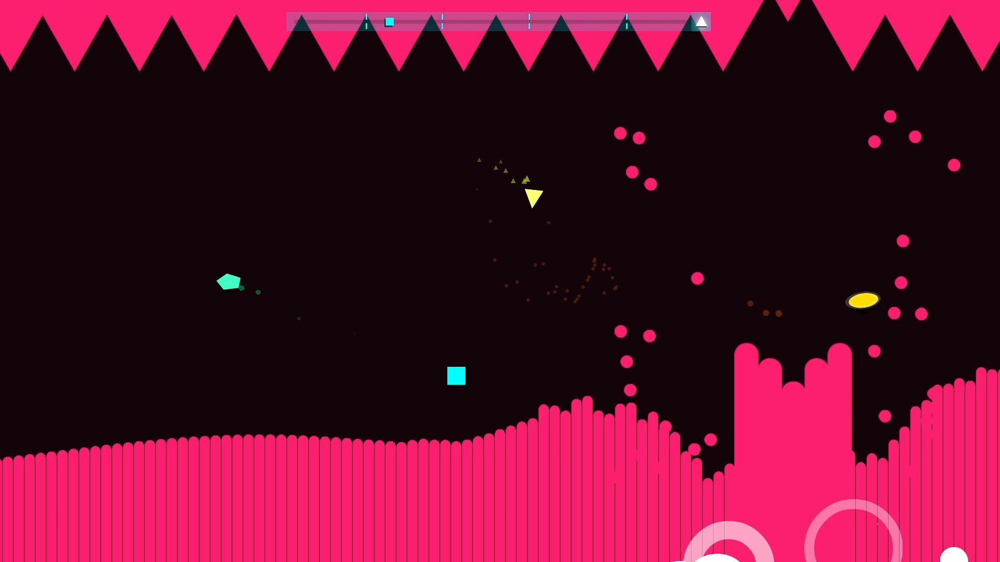

Project Idea
Overview
NanoOrbit is an iOS mobile video game where the player is a ship that rotates around the middle of the screen, as opposed to being on the bottom of the screen. In order to win, the player must survive various waves of attack by avoiding projectiles from enemy ships coming from the edges of the screen and shooting down as many of them as possible to get the highest score. It takes the standard Bullet-Hell genre and puts a positional spin on it. The main goal of this project is entertainment by catering to gamers who want a challenging yet innovative game, as well as training spatial awareness and reflexes.

Figure 1. NanoOrbit concept drawing.
Motivation
The bullet hell genre is a niche and untapped genre in the gaming world, with only a few standout entries like Just Shapes and Beats and Touhou Project. Since this genre hasn’t been oversaturated by the gaming industry, there are endless ways to expand upon the basic mechanics while going in a unique direction. A fair amount of Bullet-Hell games are on mobile, which indicates that there is a solid market for these types of games on those platforms. Mobile gamers who are looking for something refreshing and challenging will be excited to play this game, and it could help to introduce some newcomers to the genre.
Figure 2. Just Shapes and Beats gameplay screenshot.
Description
The main game is split into various levels, with each having multiple predetermined waves with certain enemies types and attack patterns, and a boss at the end. At the start of a level the player ship will be on a ring around the centre of the screen. The player can tap and hold on any part of the screen to shoot. They can drag anywhere on the screen and the ship will relative to the finger’s position and rotate around the middle of the screen.
The player has three health points, and will lose a point if they hit an enemy or projectile. If the player loses all three points they will die and respawn from the end of the last wave. The player can respawn 5 times before having to restart the whole level.
The objective of the game is to survive each level while destroying as many enemies as possible and taking damage/respawning as little as possible. At the end, the player is ranked on their performance based on the previously mentioned factors.
Different types of enemy ships will try to attack the player, each with their own distinctive movement and shooting pattern. Some examples are enemies with multiple lines of projectiles, enemies with homing shots or enemies that charge into the player and explode. As the level progresses, the waves will become more and more saturated with enemies.
When an enemy dies, sometimes they will drop a power up, which moves around the screen and must be shot by the player until it breaks. Upon doing so the player will gain whatever shot the enemy had for a short period of time. If the power up has not been collected after 30 seconds it will move off the edge of the screen.
As the player destroys more enemies, a burst gauge will fill up. When it’s full, the player can tap the gauge to unleash a shock wave that destroys all enemies on screen.
The boss fight at the end of each level is a bigger version of a certain enemy type, using similar but more dangerous attacks, and will be positioned in the middle of the screen with the player rotating around it. The player needs to deal enough damage to the boss to deplete its health bar and complete the level.
While other modes and more levels could be added in future updates, the majority of the game’s content is in the levels. The game is intended to be free-to-play, but there will be in-app purchases for extra respawns or power-ups that can be activated in the levels, which are not necessary to complete the game. In-game currency, daily objectives and customization options for the player’s ship could also be added in a future update.
Tools and Technologies
Software
- A game engine (Unity, Unreal)
- Drawing software(Photoshop, Clip Studio Paint) or 3d Modelling Software (Blender, Zbrush) to make assets and concept art
- A programming Integrated Development Environment (IDE) that allows for the game engine’s language of choice (VScode, Atom)
- Animation software or drawing software that can accommodate to animation work
- A royalty free sound effects and music library
- Github or Google Drive to store all assets and code related to the project
Hardware
- An iOS device to test the game in its intended format
- A working laptop/PC for game development
- A graphics tablet for using the drawing software
Skills Required
Required Skills
- Programming Skills
- Game Design Experience
- Art/Animation Skills
- Music Production Skills (Not mandatory but desired)
There are a lot of freelance artists and animators willing to work on concept art/assets for video games, but if those aren’t available, assets can be acquired from free-to-use sources or bought in an asset store.
Programming skills are also easy to find, as there are many programmers in the job market.
Game Design knowledge can be gained from places such as online courses and Youtube, but putting them into practice might take time and practice.
Music Producers may be hard to find, which is why an alternative of using royalty free music and sound effects is proposed.
Outcome
This project’s goal is to be fun and engaging to both Bullet-Hell veterans and newcomers to the genre. The success of this project will be reflected in 1) the number of downloads for it in the app store and 2) the average ratings for it out of five. A large number of downloads would indicate that a lot of people have found the project and were interested enough in it to download it, and a high average rating would indicate that people found that the product met their expectation, and was good enough that they took the time to leave a review.